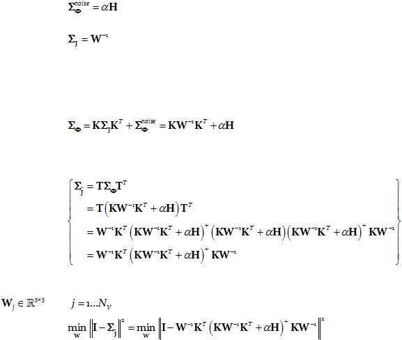

|

Cite as: “R.D. Pascual-Marqui: Discrete, 3D distributed, linear imaging methods of electric neuronal activity. Part 1: exact, zero
error localization. arXiv:0710.3341 [math-ph], 2007-October-17, http://arxiv.org/pdf/0710.3341 ”
Page 9 of 16
7.2.
eLORETA: optimal weights that produce exact localization
The regularized problem in Eq. 35 was presented from a “functional analysis” point of
view. Alternatively, a Bayesian point of view renders the same formulation, where the
quadratic functional in Eq. 35 is part of the posterior density, with:
Eq. 38:
being the covariance matrix for the noise in the measurements, and:
Eq. 39:
being the “a priori” covariance matrix for the current density J.
Based on the linear relation in Eq. 14, extending it to include possible additive noise
in the measurements, making use of Eq. 38
and Eq. 39, and assuming independence of
neuronal activity and measurement noise, the covariance matrix for the electric potential is:
Eq. 40:
Based on the linear relation in Eq. 36, and making use
of Eq. 40, the covariance
matrix for the estimated current density is:
Eq. 41:
When W
is restricted to be a block-diagonal matrix, with the j-th block denoted as
, for
, then the solution to the problem:
Eq. 42:
produces an inverse solution (Eq. 36 and Eq. 37) with zero localization error.
Zero localization error is defined in this study as follows: For a given point-test source
anywhere in the solution space, with arbitrary orientation, compute the extracranial
EEG/MEG measurements, give them to the linear inverse solution, threshold the inverse
solution to the absolute maximum of the amplitude of the current density vector field, and
compute as localization error the distance between the actual point-test source and the
position of the absolute maximum.
This property has not
been achieved by any previously published discrete 3D
distributed linear solution.
Note that the covariance matrix for the estimated current density (Eq. 41) is not the
resolution matrix of Backus and Gilbert.